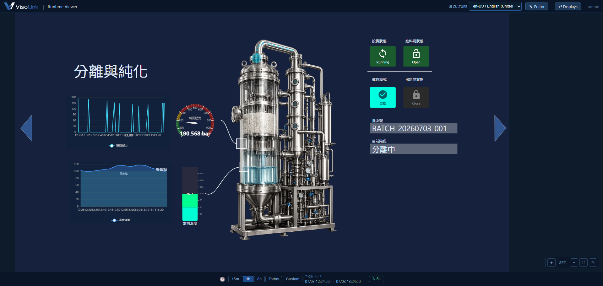
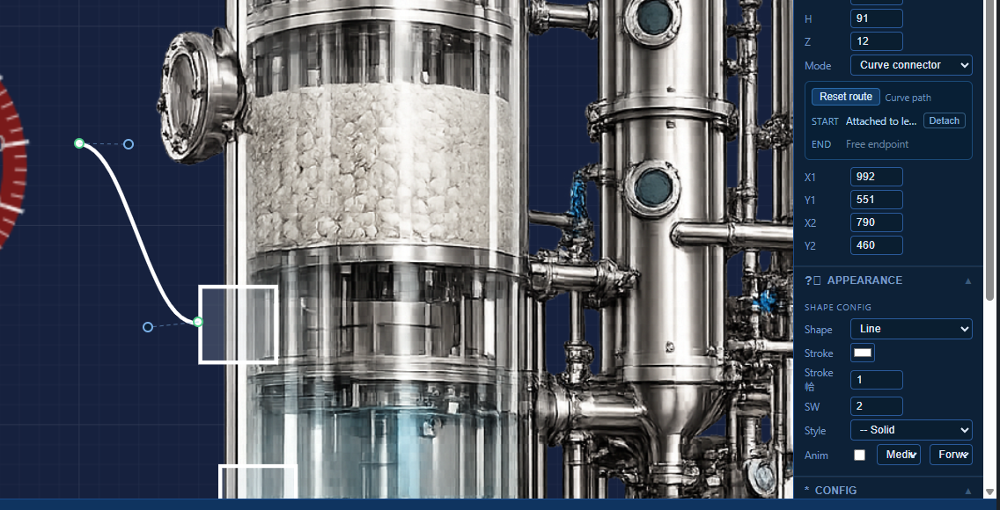

VISOLINK EDUCATION & TRAINING
Studio 畫面設計
與 Runtime 監看
從正確使用監看畫面，到建立可理解、可分析的操作情境。
第二階段一般監看人員＋Studio 設計人員建議時間：3 小時
TWO LEARNING PATHS
共同理解 Runtime，再依角色深入學習
共同課程Runtime 監看與分析
所有學員｜第 3–9 單元
設計路徑Studio 畫面製作
設計人員｜第 10–17 單元
一般監看人員可在 Runtime 單元完成後進行操作檢核；設計人員需完成全課程。
ROLE COLLABORATION
一張好用的畫面，來自使用者與設計者共同驗證
👁一般監看人員
- 依作業情境選擇 Display
- 確認時間與資料更新狀態
- 使用分析工具釐清異常
- 回報實際操作需求與問題
✦Studio 設計人員
- 將需求轉成清楚的資訊層次
- 正確配置元件與資料綁定
- 處理載入、無資料及無權限狀態
- 以 Runtime 實際情境完成驗證
RUNTIME OVERVIEW
先掌握畫面、時間與分析工具的位置
 實際介面依 Display 設計與使用權限呈現。
實際介面依 Display 設計與使用權限呈現。
- 內容畫布查看設備、指標、圖表與狀態。
- 導覽與顯示控制切換畫面、固定畫布或全畫面。
- 時間控制設定整體畫面的觀察範圍。
- Data Analysis開啟趨勢與時間標記分析。
GLOBAL TIME CONTEXT
調整一次時間，讓整張畫面在同一情境下解讀
1選擇時間模式即時或歷史範圍
2設定時間窗指定起訖或持續區間
3同步畫面元件依設定取得資料
4確認情境再進行判讀與比較
操作提醒
分析完成後若要回到即時監看，應確認時間模式已切回目前狀態，避免把歷史畫面誤認為即時資料。
QUICK TREND
Popup Trend 已整合進 Data Analysis
在監看情境中選取資料，即可快速查看一段時間內的變化，不必離開 Runtime。
- 選擇要觀察的 Tag
- 依全域時間呈現趨勢
- 同時比較多個序列
- 放大至全畫面持續查看
 原 Popup Trend 能力成為 Data Analysis 中的快速趨勢工具。
原 Popup Trend 能力成為 Data Analysis 中的快速趨勢工具。
TIME MARKER ANALYSIS
分析點不只是游標，而是可操作、可比較的物件
 在 Runtime 中保留時間點，選擇資料並比較結果。
在 Runtime 中保留時間點，選擇資料並比較結果。
01建立標記
在 Runtime 情境中點選值得關注的時間。
AGGREGATE & DISPLAY
依問題選擇彙整方式，不只看原始資料點
Σ加總
觀察期間累積量。
μ平均
理解區間典型水準。
↑↓最大 / 最小
找出區間極值。
#筆數
確認事件或資料量。
彙整結果可依判讀目的選擇適合的圖表；先定義問題，再決定計算與呈現方式。
MONITORING SOP
一般監看人員的標準操作循環
1進入確認 Display 與身分
2檢查資料更新與時間模式
3判讀狀態、數值與趨勢
4分析時間標記與比較
5回報保留時間、對象與畫面
Runtime 檢核點能切換時間、加入分析資料、建立兩個時間標記並說明比較結果。
STUDIO OVERVIEW
設計人員的工作台：畫布、元件、屬性與資料
 使用工具區、畫布與設定面板完成 Display。
使用工具區、畫布與設定面板完成 Display。
- Display 與畫布決定設計範圍與顯示尺寸。
- Symbol 工具放入文字、形狀、儀表及趨勢。
- 屬性設定調整外觀、位置與行為。
- 資料瀏覽與綁定讓畫面由實際資料驅動。
DISPLAY SETUP
先定義使用情境，再決定畫面尺寸與內容
01釐清用途
中控大屏、桌面操作或行動瀏覽？使用者要回答什麼問題？
建立 Display
使用可辨識的名稱與分類，設定目標畫布尺寸。
規劃資訊層次
優先呈現狀態與異常，再配置細節與分析資訊。
確認顯示模式
驗證固定畫布、全畫面及不同尺寸設備的呈現。
CANVAS & LAYOUT
一致的對齊、間距與分組，讓資訊更快被讀懂
層次
重要狀態先被看見，相關資訊靠近排列，輔助內容降低視覺權重。
一致
相同意義使用一致的顏色、字級、單位、元件與互動方式。
留白
不要用元件填滿每個角落；適度留白能區隔資訊並降低誤判。
設計檢查
縮小畫面後，使用者是否仍能在數秒內指出目前狀態、異常位置與下一步操作？
SYMBOL LIBRARY
選擇能回答問題的元件，不以裝飾為目的

圖形與元件可組合成符合現場語意的視覺畫面。
狀態
文字、圖示、形狀、顏色
量值
數值、儀表、進度
趨勢
時間序列與多資料比較
操作
按鈕、導覽及互動控制
DATA BROWSER
沿著資料結構找到正確的 View、Tag 與欄位
▾ 資料來源
▾ 生產設備
▾ Line_A
◆ Temperature
◆ Pressure
◆ RunningStatus
▸ Line_B
- 先以設備、區域或業務用途縮小範圍
- 確認名稱、資料型別與單位
- 辨認即時值、歷史序列或計算結果
- 綁定前向資料管理人員確認語意
名稱相似不代表用途相同。無法確認資料語意時，不應先綁定再猜測。
DATA BINDING
將資料拖放到元件，建立正確而清楚的反應

從資料瀏覽到元件屬性，建立可追蹤的綁定關係。
CALCULATION & LOGIC
把原始資料轉成使用者能立即判讀的資訊
單位與格式
設定小數、單位與空值顯示。
門檻與狀態
使用可驗證的條件區分狀態。
計算結果
保留公式定義與業務意義。
SAVE, PREVIEW, VERIFY
完成編輯不等於完成交付
01儲存
確認 Display 名稱、內容與縮圖可辨識。
畫面更新前應先說明影響範圍；關鍵監看畫面應保留可回復的版本與變更紀錄。
HANDS-ON ASSESSMENT
第二階段實作任務
Runtime 任務｜全體
- 開啟指定 Display 並確認時間模式
- 加入兩個觀察 Tag
- 建立兩個時間標記並比較結果
- 記錄一份包含情境資訊的異常回報
Studio 任務｜設計人員
- 建立指定尺寸的 Display
- 配置狀態、數值與趨勢元件
- 完成三項資料綁定與狀態邏輯
- 於 Runtime 驗證並由同學操作驗收
完成標準監看人員能獨立完成分析；設計人員能交付一張資料正確、層次清楚且經 Runtime 驗證的畫面。
下一階段：系統管理與維運 →